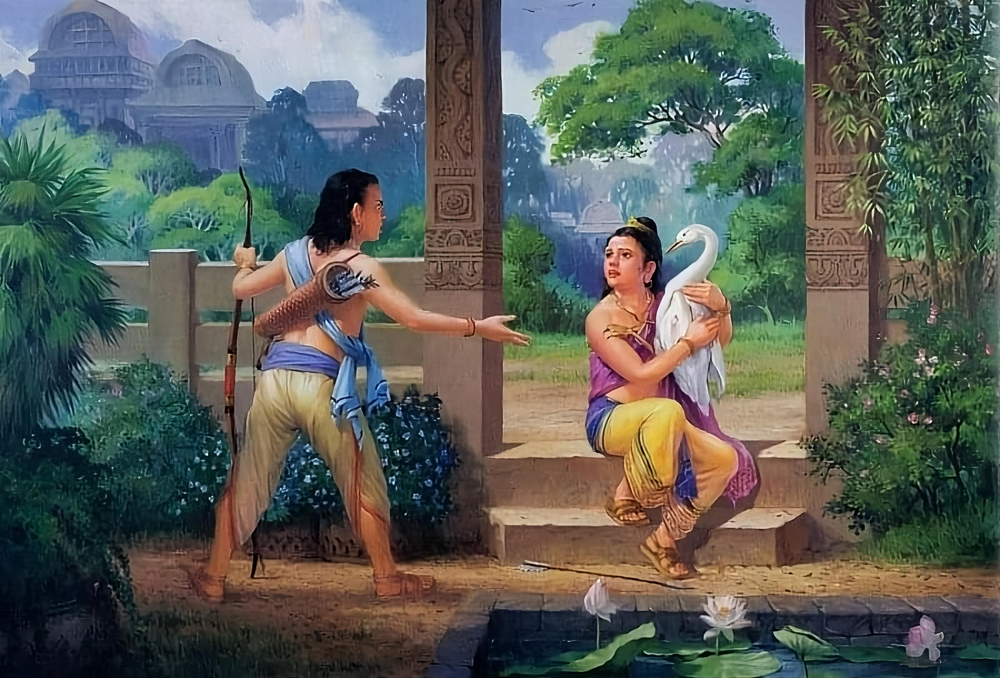

Namo tassa bhagavato arahato sammāsambuddhassa
Homage to the Most Venerable One, the Arhat, the Self-Awakened One
Namo tassa bhagavato arahato sammāsambuddhassa
Homage to the Most Venerable One, the Arhat, the Self-Awakened One
Namo tassa bhagavato arahato sammāsambuddhassa
Homage to the Most Venerable One, the Arhat, the Self-Awakened One
Sabbapāpassa akaraṇaṃ,
Do no evil
Kusalassa upasampadā ;
Accumulate good things
Sacitta pariyo dapanaṃ,
Encourage your mind to comprehend
Etaṃ buddhāna sāsanaṃ
This is Buddha's teaching.
The drawing depicts the Bodhisatta holding a swan in his hands, protecting it from his cousin Devadatta, who, having pierced the swan with an arrow, demands the return of his prey.
Siddhartha grew up in the royal palace until the age of eight, without learning anything, and only from the age of eight did he begin to learn the various skills that the Sakyans were learning at his age, under the supervision of the brahmins Vishwamitra and Kshantideva.
Having reached the age of twelve, he mastered such skills as hunting, horse riding and other skills that please the desires of the mind and other senses.
One day he visited the Kanka garden and while he was amusing himself there, wandering in different directions, shooting arrows at whatever he pleased, he separated from other young Sakyans who were also in that garden and amusing themselves in the same way.
Just then a flock of wild swans flew over the garden, and Siddhartha's brother, Devadatta, aimed his bow and shot at one of them, wounding the bird's wing. The bird fell to the ground in the middle of the garden, some distance from Devadatta.
Siddhartha, seeing the bird pierced by an arrow that had fallen to the ground, went to it and, collecting medicinal leaves, took the swan in both hands, sat down and placed the bird on his lap. He held the swan with his left hand, took out the arrow with his right and smeared the wound with the juice of the medicinal leaves.
At this time, Devadatta sent some messengers to look for the swan. When the messengers saw Siddhartha holding the swan in his hands, they said to him: "Devadatta has shot a swan that fell in your garden, send this swan to Devadatta without delay."
Then Siddhartha answered the messengers: “If the bird were dead, it would be right to send it to Devadatta, and I would immediately return it to you; but since it is alive, you have no right to it.”
The messengers reported to Devadatta what Siddhartha had answered them, and then Devadatta hurried to Siddhartha personally and, having reached the prince, declared: “Regardless of whether the bird is alive or dead, it belongs to me; thanks to my skill in archery I was able to shoot it, on what real grounds did you refuse to send it to me?”
To which Siddhartha replied, "The reason I protect this bird is because it is alive, and I protect its life. But if you say that this bird does not belong to me, then go and call all the wise elders of the Sakyans, and let them decide the matter on its merits."
At that time, a certain deva who lived in the heaven of Suddhavasa assumed the form of an old man and entered the assembly of the elders of the Sakyas, who were at that time deciding the fate of the swan, and the deva who assumed the form of an elder said thus: "He who nurses, feeds and cherishes is rightfully a good guardian and owner. He who only shoots, kills and destroys is himself a loser and is unable to protect even himself."
Then the elders of Sakya, having listened to the elder, confirmed his words and gave their verdict in favor of Siddhartha.
Devadatta was Siddhartha's cousin, the son of Suppabuddha of the Sakyan clan (Buddha's maternal uncle) and Suppabuddha's wife Pamita. He had a sister, Yashodhara, who later married Prince Siddhartha.
Some sources describe Devadatta as being very strong physically and possessing great strength. As a child, he grew up and spent time with Siddhartha and other Sakyan offspring. It is said that he was always envious of Siddhartha, and they would constantly have conflicts like the story of the swan.
When the Buddha visited Kapilavatthu again after the Awakening and preached to the Sakyams, Devadatta, along with his friends Ananda, Bhagu, Kimbila, Bhaddiya, Anuruddha and their barber Upali, decided to leave the worldly life. They went to the Buddha and joined the Sangha.
Of the six Sakyas and the barber Upali after their Supreme Initiation:
For some time, Devadatta enjoyed great respect and reputation in the Sangha, and in one passage in the Vinaya he is mentioned in the list of eleven chief elders whom the Buddha praises. But later, Devadatta became proud of his fame. As this happened, his ill will and envy towards the Buddha gradually increased more and more, and eventually, because of this envy and desire for greater fame, he began to feel open hostility towards the Buddha.
Later, Devadatta tried to win the favor and support of Ajatasattu, the son of King Bimbisāra, and he succeeded with the help of his supernormal abilities. Ajatasattu's abundant support further inflated his ego and ambitions, so that Devadatta conceived the idea of declaring himself the Buddha and leading the Sangha. As soon as this desire arose in him, Devadatta immediately lost all his supernormal abilities based on worldly jhāna. But this did not stop him, and one day at a large gathering of kings and ministers, Devadatta approached the Buddha and asked to be made the leader of the Sangha. The Buddha rejected this request. As a result, Devadatta became very angry and vowed to take revenge on the Buddha.
He discussed his anger and plotted revenge with Ajatasattu. Ajatasattu listened to and supported Devadatta in everything, so that one day Devadatta even managed to persuade Ajatasattu to kill his father.
With the support of Ajatasattu, Devadatta organized the first attempt on the life of the Buddha. The plan was to hire many assassins for the job. The first assassin who was to kill the Buddha was then to be killed by two other assassins, and these two were then to be killed by four others, and these four were then to be killed by eight others, and these eight by sixteen others. But when the first assassin approached the Buddha, he became afraid. He put down his weapon and after talking with the Buddha, took refuge in him. Eventually the same thing happened to the other assassins.
Then Devadatta tried to kill the Buddha himself. When the Buddha was walking at the foot of the Vulture Rock, Devadatta climbed to the top and threw down a huge stone. As it fell, the stone hit another stone, and a flying fragment injured the Buddha's leg, blood flowed from the wound. The Buddha looked up and, seeing Devadatta, said: "You foolish man, you have committed the greatest unwholesome deed ānantariya-kamma by spilling the blood of the Buddha."
Devadatta's third attempt to kill the Blessed One was to give drink to the ferocious elephant Nalagiri. When Nalagiri saw the Buddha approaching from a distance, he raised his ears, tail and trunk and rushed at him. As the elephant approached, the Buddha was practicing mettā. The Buddha's mettā was so great and deep that when the elephant reached the Buddha, he stopped and stood rooted to the spot before the Teacher. The Buddha then stroked Nalagiri's head.
After this, the elephant respectfully raked the dust at the Buddha's feet with its trunk and scattered it over its own head. Then the elephant left, completely tamed and obedient.
Devadatta's attempt on the Buddha's life caused a great stir among the people. The people blamed King Ajatasattu, saying, "It was Devadatta who caused the death of our King Bimbisara. He sent mercenaries to kill the Buddha. He shed the Buddha's blood by throwing a stone on him. And now he has sent this elephant Nalagiri to kill the Teacher. However, King Ajatasattu, who follows Devadatta around, accepts such a wicked man as his teacher."
When King Ajatasattu began to be reproached by the people, he ordered his regular donations to Devadatta to be cancelled and stopped visiting his former teacher. The townspeople also stopped offering food to Devadatta when he came to their houses for alms.
Despite his failures, Devadatta still tried to become the leader of the Sangha. One day, he tried another cunning plan. With the help of five hundred misguided monks, he planned to split the Sangha.
He asked the Buddha to oblige the monks to observe five additional rules:
(1) All monks must live in a forest monastery for life. A monk who lives in a monastery near a village shall be guilty of committing an offense.
(2) All monks must always eat only the food they receive by going on alms round. A monk who accepts food offered by lay people on invitation shall be guilty of an offence.
(3) All monks must always wear only discarded rags. A monk who accepts clothing offered by lay people shall be guilty of an offence.
(4) All monks must always live at the foot of trees. A monk who goes to a shelter with a roof shall be guilty of an offence.
(5) All monks should always avoid eating meat and fish. A monk who eats meat or fish should be guilty of an offence.
Then Buddha said:
“Devadatta, I cannot accept your demands, I declare:
(1) Let a monk live in a forest monastery or in a monastery near a village, as he wishes.
(2) Let a monk eat food that he obtains by going for alms or by accepting food offered by lay people on invitation.
(3) Let a monk wear clothes made from rags or clothes offered by lay people, as he wishes.
(4) Devadatta, I have allowed the monks to live at the foot of the trees for eight months.
(5) I have permitted the monks to eat meat or fish on condition that they do not see, hear or suspect that any creature is being killed for their food.”
Here, when Devadatta made the five demands, the Buddha immediately realized that his purpose was to create a schism in the Sangha. Since giving in to these demands would be an obstacle to spiritual progress, the Buddha considered them unreasonable and said that a monk could live in a forest hermitage if he wanted, and so on.
In this regard, the virtuous monk and the laity should know what befits a monk.
According to Buddha, there are four types of monks, namely:
(a) a monk living in the forest who will attain the Path and the Fruit through his great physical and intellectual abilities;
(b) a monk who cannot live in the forest because of his physical weakness and who can make spiritual progress only if he practices Dhamma in a village monastery;
(c) a monk who can achieve spiritual progress either in a forest hermitage or in a village monastery through his physical strength and patience;
(d) a monk (padaparama) who does not achieve spiritual progress despite his efforts either in the forest or in the village monastery.
In connection with these types of monks:
(a) The Buddha wishes that only the monk of the first order should live in the forest hermitage. Hermitage is suitable for him, and following his example, in the future, disciples will want to live in the forests.
(b) Buddha wants the representatives of the second type to live in a village monastery.
(c) According to Buddha, the third type of monk should live only in a forest hermitage. The forest hermitage is good for him, and following his example, in the future, disciples will want to live in forests.
(d) As for the monk (padaparama) who does not make much spiritual progress in this life, the Buddha wishes him to live in a forest hermitage. The practice of asceticism (dhutaṅga) and meditation in the forest hermitage will contribute to his attainment of the Path and the Fruit in the next life, and he will become a living example for his disciples.
So when Buddha says:
"(1) Let a monk live in a monastery near a village at his own discretion," he means "a monk (b) who cannot live in the forest because of his physical weakness and who will attain his spiritual goal only if he practices the Dhamma in a village monastery." This concession also allows other monks to live in the village monastery.
If the Buddha had accepted Devadatta's demands, it would have excluded the possibility of spiritual progress for two types of monks:
(1) a monk (b) physically weak and
(2) a monk who lived in the forest in his youth, but who cannot live there in old age due to deteriorating health and is therefore forced to live in a village monastery to achieve his spiritual goal.
For these reasons, the Buddha rejected Devadatta's demands.
Devadatta made this request knowing full well that the Buddha would refuse it. He was happy that the Buddha did not approve of the five rules and used these rules to gain supporters and followers. The newly ordained monks, who had little knowledge of the Dhamma, abandoned the Buddha and accepted Devadatta as their leader.
There is an interesting moment from the notes of Chinese pilgrims:
Faxian and other Chinese pilgrims who traveled to India in the early centuries of the Common Era recorded the continued existence of the Gotamaka Buddhists, followers of Devadatta. The Gotamaka are also mentioned in Pali texts of the second and fifth centuries of the Common Era. Devadatta's followers are recorded as having venerated all the Buddhas before Shakyamuni (Gautama Buddha), but not Shakyamuni himself. According to the works of Faxian, Xuanzang, and I Ching, these people practiced in the same way and with the same books as other Buddhists, following the same tapas and performing rituals, but only to the three past Buddhas, not Shakyamuni.
Eventually, later, after the Venerable Sariputta and Venerable Moggallana had explained the Dhamma to the monks who had gone with Devadatta, those monks returned to the Buddha.
After this, misfortunes befell Devadatta. He became very ill and before his death he sincerely regretted his actions and wanted to see Buddha before his death. But the fruits of his evil kamma began to ripen and prevented him from doing so. On the way to Buddha at the gates of the Jetavana monastery, he was swallowed by the earth. But before his death, he managed to take refuge in Buddha.
"I, Devadatta, on my deathbed, seek refuge with the Exalted One. With this flesh, bones and this continuing life force. With the mind associated with knowledge, accompanied by joy, moved by the three wholesome roots (I seek refuge with the Omniscient Buddha, the Supreme Being in the world, the All-Seeing Teacher, who can tame all worthy beings and who possesses the thirty-two magnificent marks of an extraordinary person due to his innumerable good deeds)."
The Buddha knew that after ordination, Devadatta would commit two most evil deeds: causing the Buddha's blood to be shed and creating a schism in the Sangha, and that he would later perform a virtuous deed that would help him to be liberated from saṃsāra in the future. After his suffering in hell was over and after one hundred thousand kalpas had passed, Devadatta would become a Paccekabuddha named Attissara. As a Paccekabuddha, he would be able to attain enlightenment through his own efforts.